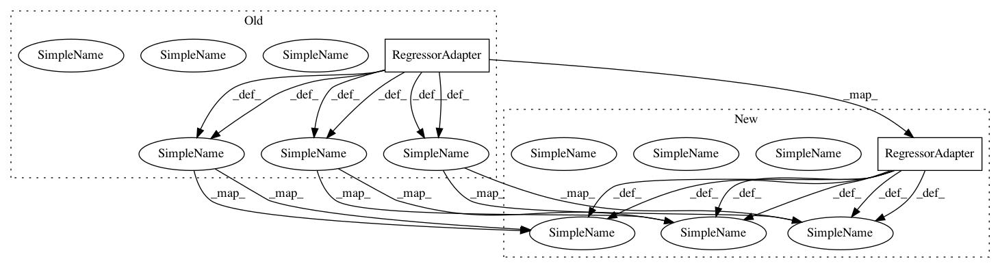

2d3ec31520f2a6d2187ddb529665d8b984bda45e,examples/cross_validation.py,,,#,30
Before Change
// -----------------------------------------------------------------------------
data = load_diabetes()
icp = IcpRegressor(NormalizedRegressorNc(RegressorAdapter(RandomForestRegressor(n_estimators=100)),
RegressorAdapter(RandomForestRegressor(n_estimators=100)),
AbsErrorErrFunc()))
icp_cv = RegIcpCvHelper(icp)
scores = cross_val_score(icp_cv,
data.data,
data.target,
iterations=5,
folds=5,
scoring_funcs=[reg_mean_errors, reg_median_size],
significance_levels=[0.05, 0.1, 0.2])
print("Normalized absolute error regression: diabetes")
scores = scores.drop(["fold", "iter"], axis=1)
print(scores.groupby(["significance"]).mean())
// -----------------------------------------------------------------------------
After Change
// -----------------------------------------------------------------------------
data = load_diabetes()
underlying_model = RegressorAdapter(RandomForestRegressor(n_estimators=100))
normalizer_model = RegressorAdapter(RandomForestRegressor(n_estimators=100))
normalizer = RegressorNormalizer(underlying_model, normalizer_model, AbsErrorErrFunc())
nc = RegressorNc(underlying_model, AbsErrorErrFunc(), normalizer)
icp = IcpRegressor(nc)
icp_cv = RegIcpCvHelper(icp)
scores = cross_val_score(icp_cv,
data.data,
data.target,
iterations=5,
folds=5,
scoring_funcs=[reg_mean_errors, reg_median_size],
significance_levels=[0.05, 0.1, 0.2])
print("Normalized absolute error regression: diabetes")
scores = scores.drop(["fold", "iter"], axis=1)
print(scores.groupby(["significance"]).mean())
// -----------------------------------------------------------------------------
In pattern: SUPERPATTERN
Frequency: 4
Non-data size: 2
Instances
Project Name: donlnz/nonconformist
Commit Name: 2d3ec31520f2a6d2187ddb529665d8b984bda45e
Time: 2017-03-10
Author: henrik.linusson@gmail.com
File Name: examples/cross_validation.py
Class Name:
Method Name: